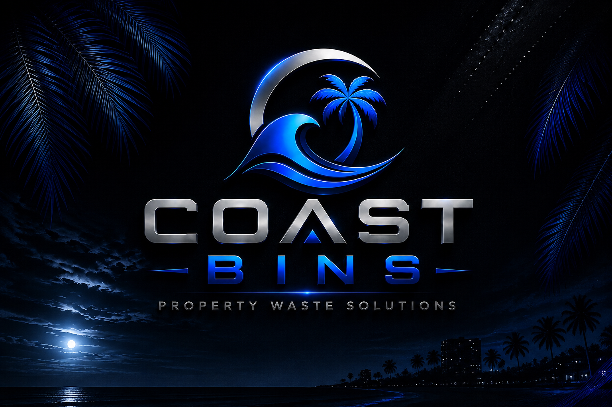

01
⌂
Residential Bin Service
Scheduled curb placement before collection and neat return after pickup.
- Recurring trash-day service
- Recycling coordination
- Designated return placement
- First-service bin cleaning
PREMIUM PROPERTY CARE · TREASURE COAST
Professionally managed curbside waste service for homeowners, vacation rentals, property managers, HOAs, and multifamily communities.
A BETTER STANDARD FOR TRASH DAY
Coast Bins turns an everyday chore into a professionally managed property service. We coordinate recurring bin placement, return, waste-area support, and sanitation with the reliability expected from a premium service company.
PROPERTY WASTE SOLUTIONS
Simple for one home. Structured enough for an entire portfolio.
Scheduled curb placement before collection and neat return after pickup.
Reliable bin management that removes one more guest-turnover problem.
Professional recurring service for managers overseeing multiple addresses.
Customized waste-support programs for apartments, condos, and communities.
Professional cleaning designed to reduce residue, grime, and unpleasant odors.
Support for loose trash, overflow concerns, and cleaner exterior waste areas.
WHY COAST BINS
Every detail is designed to make waste day more reliable, more professional, and easier to manage.
Recurring service is built around your local collection schedule and property instructions.
Bins are handled with care and returned neatly to the designated location after service.
We make it easy to reach Coast Bins and keep property managers, owners, and hosts informed.
From single homes to managed portfolios, service plans can be tailored to the property.
WHAT WE HANDLE
Coast Bins combines recurring bin service with property-focused support that can be tailored to the location.
Scheduled curb placement aligned with local collection.
Neat return to the property's designated location.
Recycling coordination when included in the service plan.
Cleaning and sanitation options for better presentation.
Waste-day support built around rental operations.
Custom recurring service for property portfolios.
Scalable solutions for apartments, condos, and communities.
Optional support for cleaner exterior waste areas.
Scheduled removal support for eligible oversized household and property items that do not belong in standard curbside bins. Availability, item type, volume, and disposal requirements are confirmed before service.
Preventive waste-area care designed to reduce animal access, scattered trash, and recurring mess around bins. Service may include securing the waste setup, checking problem areas, and cleanup support. This is prevention-focused property care, not wildlife trapping or pest-control treatment.
SERVICE CONFIRMATION
For eligible service plans, Coast Bins can provide service-completion confirmation so owners and managers have better visibility without being on site.
Your scheduled Coast Bins service has been completed.
Property-specific confirmation options may vary by service plan.THE FIRST-SERVICE EXPERIENCE
Eligible new recurring residential customers may receive an initial bin cleaning as part of their Coast Bins service setup. Availability and scope are confirmed before service begins.
Check availability →THE COAST BINS STANDARD
We follow agreed property instructions and access requirements.
Bins are returned to the location specified in the service plan.
Clear contact channels help owners and managers stay informed.
Our service is designed around keeping exterior waste areas looking managed.
Recurring routes are built around collection schedules and confirmed service plans.

THE COAST BINS STANDARD
Clean presentation, dependable scheduling, respectful property handling, and communication you can count on.
BEYOND TRASH DAY
From oversized items to animal-related mess around waste areas, Coast Bins offers additional property-waste support that can be added to eligible service plans or quoted separately.
Need an eligible oversized item removed? Send us the details or a photo and we’ll confirm whether it can be handled, disposal requirements, and personalized pricing before pickup.
Request Bulk Removal Pricing →Preventive waste-area service focused on reducing accessible trash and the mess animals can create around bins. Coast Bins does not advertise this service as wildlife removal, trapping, extermination, or licensed pest control.
Request Prevention Pricing →PROPERTY MANAGERS & PORTFOLIOS
Build a custom Coast Bins service plan around your addresses, collection schedules, and property instructions.
PERSONALIZED PRICING
Every property operates differently. Coast Bins creates service plans based on property type, collection schedule, number of bins, service frequency, route location, and additional property-waste needs.
Request a personalized service proposal and we’ll recommend the right Coast Bins solution for your property or portfolio.
HOW IT WORKS
Tell us the property location, number of bins, pickup schedule, and service needs.
We confirm route availability, property instructions, recurring schedule, and pricing.
Coast Bins performs the agreed service while you focus on everything else.
SERVICE AREA
Coverage is organized by route and local collection schedules. Contact us to confirm availability for your exact property.
Including Stuart, Port Salerno, Palm City, Jensen Beach, Hobe Sound, and nearby areas.
Recurring residential and managed-property routes may be available throughout the county.
Availability varies by route. Contact Coast Bins to confirm service for your property.
Select Tequesta-area properties may be eligible for Coast Bins service. Availability is confirmed by property address and route capacity, including locations near the Martin–Palm Beach county line.
MEET THE OWNER
JaMarcus D. Moss
Owner & Founder | Coast Bins
“Coast Bins started with a simple idea: provide dependable service that makes life easier for the people in our community. As a Treasure Coast resident and father, I understand how valuable time and peace of mind are. Every service we provide is built around reliability, respect, and treating your property like our own.”
Coast Bins is focused on delivering professional property waste solutions with the consistency and attention to detail homeowners, rental operators, and property managers expect.
HOLIDAYS & SCHEDULE CHANGES
Municipal and hauler schedules may change because of holidays, weather, emergencies, or other conditions outside Coast Bins' control. When a known schedule change affects an active route, Coast Bins will make reasonable efforts to adjust service and communicate relevant changes.
Service timing is always subject to access, route capacity, and the actual collection schedule.
FREQUENTLY ASKED QUESTIONS
We provide scheduled property waste support, including recurring curb placement and return of trash and recycling bins, plus optional sanitation and custom property services.
Yes. Coast Bins can coordinate recurring waste-day service for short-term rentals so guests and property managers have one less task to manage.
Recycling can be included when it is part of the property's agreed recurring service plan and local collection schedule.
Collection schedules can shift around holidays. Coast Bins follows the applicable local schedule when route updates are known and service remains available.
Yes. Multi-property and portfolio service can be quoted with custom schedules and property-specific instructions.
Pricing depends on property type, number of bins, service frequency, route location, pickup schedule, and any add-ons. Request a quote for exact pricing.
Yes. Bin sanitation may be available as an add-on service depending on the route and property.
Submit your property address through the service request form or call Coast Bins at (772) 530-4389 and we will confirm route availability.
REQUEST PRICING
Share a few details and Coast Bins will review your property, route requirements, and service needs before providing personalized pricing.
COAST BINS
Premium property waste solutions tailored to your property across Florida's Treasure Coast.
Request Pricing